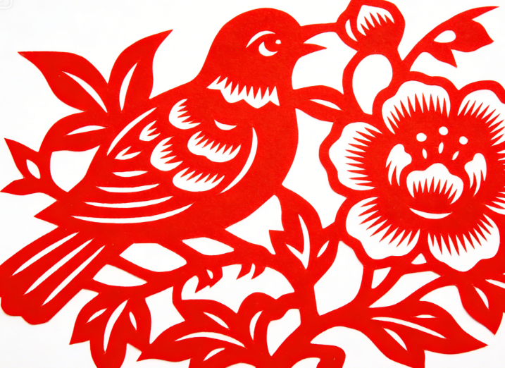
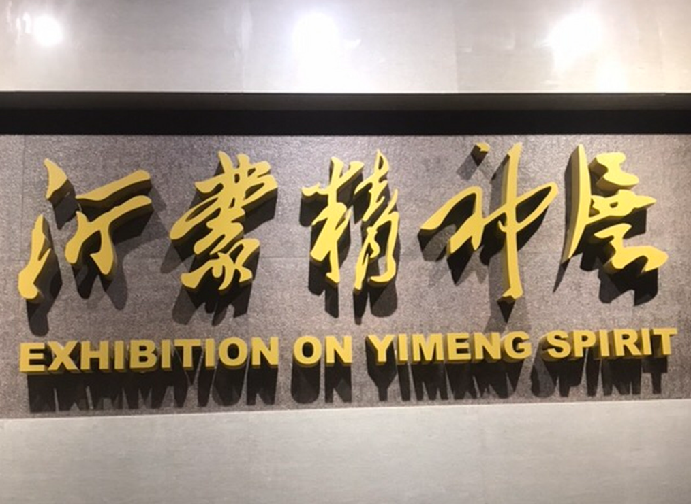

Shadow PuppetryLinyi shadow puppetry is a treasured folk art with over 200 years of history. Skilled artisans craft intricate leather figures that come alive behind illuminated screens, retelling classic tales of heroes, legends, and mythology. The delicate artistry and expressive performances have earned it recognition as an important cultural heritage of Shandong Province, enchanting audiences with stories passed down through generations of master craftsmen. |
|
Liuqiu OperaKnown as the "pearl of Yimeng," Liuqiu Opera is a distinctive local opera form unique to the Linyi region. With its melodic tunes, colorful costumes, and expressive movements, it tells stories of love, valor, and everyday life in the Yimeng Mountains. This living art form continues to thrive with dedicated performers passing down centuries-old traditions to new generations of artists and enthusiastic audiences across the region. |
|
 |
Paper Cutting ArtLinyi paper cutting is a vibrant folk art that transforms simple red paper into intricate designs of flowers, animals, and auspicious symbols. During festivals and celebrations, these delicate artworks adorn windows and doors, bringing color and joy to every household. Each piece is handcrafted with remarkable precision using scissors or knives, reflecting the artistic soul and boundless creative spirit of the local people. |
Traditional CraftsLinyi's rich tradition of handicrafts includes bamboo weaving, clay sculpture, and wood carving, each reflecting the ingenuity and artistic heritage of the local people. |
 Yimeng SpiritThe legendary Yimeng spirit of hard work, resilience, and selfless dedication has been passed down through generations, defining the character of Linyi and its people. |
Folk FestivalsThroughout the year, Linyi hosts vibrant folk festivals featuring temple fairs, lantern shows, and dragon boat races that showcase the region's colorful cultural traditions. |